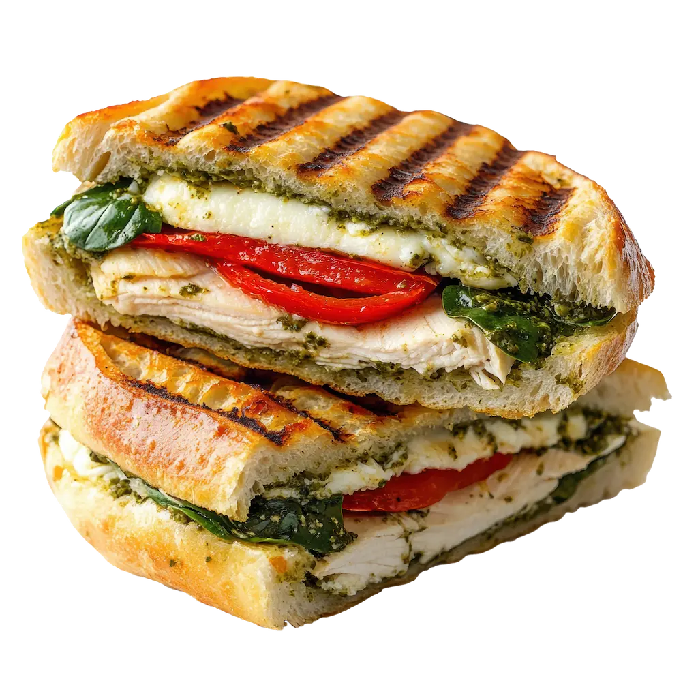

Panini de Pavo y Queso Caprese
Tiempo: 15 minutos · Dificultad: Fácil · Porciones: 2

Preparación
- Corta el pan por la mitad horizontalmente y unta una capa generosa de pesto de albahaca en la base inferior.
- Coloca las lascas de pechuga de pavo sobre la capa de pesto.
- Agrega las rodajas de queso mozzarella fresco y las rodajas de tomate. Sazona con una pizca de sal y pimienta recién molida.
- Distribuye las hojas de albahaca fresca sobre el tomate y rocía un hilo de reducción de vinagre balsámico.
- Cierra el sándwich con la otra mitad del pan y pincela ligeramente la parte exterior superior con aceite de oliva.
- Coloca el sándwich en una prensa para panini o en una sartén acanalada a fuego medio durante 3 a 5 minutos por lado, presionando firmemente hasta que el pan esté dorado y crujiente y el queso se derrita.
- Corta en diagonal y sirve de inmediato bien caliente.
¡Un sándwich caliente gourmet, crujiente por fuera y fundido por dentro!
Tips de nuestra comunidad
Descubre recetas, combinaciones y secretos compartidos por otros amantes de la cocina. ¿Tienes un secreto de cocina?
Compártelo con la comunidad.
Si no tienes prensa para panini, usa una sartén de hierro y coloca otra olla pesada encima del sándwich mientras se dora para lograr el mismo efecto prensado.
Seca ligeramente las rodajas de mozzarella con papel toalla antes de armar el panini para evitar que el pan se humedezca de más durante el tostado.